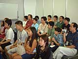
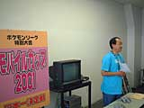
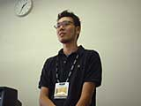
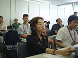
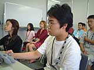
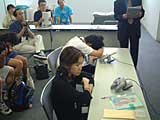
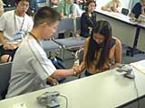
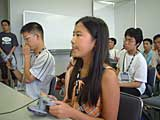
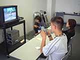

| #9 ポケモンリーグ特別大会 モバイルカップ2001 日本一決定戦 スペースワールド会場にて ついにチャンピオン決定！ |
ポケモンリーグ特別大会 モバイルカップ2001 日本一決定戦 スペースワールド会場にて ついにチャンピオン決定！ page1 ・・・ page2 |
|
本日８月26日、スペースワールド2001会場内のとある一室にて、ポケモンリーグ特別大会 モバイルカップ2001の日本一決定戦が行なわれました。そこで全国から参加した1000名の代表として戦うのは、山本 紫織さん、藤田 美蘭（ミカ）さん、落合 浩太郎くん、永井 章博くんの４名。みなさん、ポケモンリーグの常連さんですね。この４名の中で、日本一の栄冠を手にするのは誰か！ 大会の様子と合わせて、ここでレポートしちゃいます。 |
|
と、その前に、モバイルカップ2001について簡単に説明しておきましょう。ご存知の通り、『ポケットモンスター・クリスタル』では、モバイルアダプタＧＢを利用して全国の友達とオンラインで対戦することができます。その機能を使って、さる６月、全国の応募者から抽選で選ばれた1000名の皆さんと、任天堂代表のトレーナーがオンライン・ポケモンバトルを行ないました。任天堂側のトレーナーに勝ち抜いた人だけが次へ進めるというサバイバル戦が第５回戦まで行なわれ、最後まで勝ち抜いた22名で、７月にエクストラマッチが開かれたのです。そして、そのエクストラマッチでの上位入賞者４名こそ、冒頭で紹介したポケモントレーナーのみなさんです。 |
|   |
|
 さて、主催者の挨拶が終わり、いよいよ注目の日本一決定戦が始まりました。会場には、ゲストコメンテーターとしてトランセル種市さんにもおこしいただいてます。「この大会は本来ならメインステージで行なわれる予定でしたが、都合により、別の会場で行なわれます。どこにいても誰でも参加できるというモバイルカップの主旨から考えましても、幕張メッセに来られない全国のお友達にできるだけ早く結果を伝えることができればと思いまして、大会の様子と結果をホームページ上で発表することになりました」（挨拶の言葉から引用） トランセル種市さんが出場者のみなさんに意気込みを聞き、激励の言葉をかけてくれました。続いてルールの説明と確認が行なわれ、さあ、準決勝第１試合の始まりです！ |
| ＜準決勝 第１試合＞ |
|
永井 章博くん（トレーナー名/ウィル）VS 藤田 美蘭さん（トレーナー名/クレア） 永井くんのカビゴンに対して、藤田さんはクロバットからガラガラにポケモンチェンジ。そのガラガラにカビゴンの"じわれ"が決まり、ガラガラは一撃で倒れてしまいます。そのあと、藤田さんはなんとか巻き返しをはかりますが、レアコイルまでも"じわれ"をくらってしまい、健闘空しく敗れてしまいました。 |
|    |
|
──トランセル種市さんのコメント "じわれ"が決まった時点で、永井くんが主導権を握りましたね。藤田さんのクロバットがマヒしてしまったのが試合のポイントでした。藤田さんはポケモンリーグでもあまり使われないポケモンを選択していたのが印象的でした。 |
| ＜準決勝 第２試合＞ |
|
山本 紫織さん（トレーナー名/しおり）VS 落合 浩太郎くん（トレーナー名/コウ） ２人ががっちりと握手を交わした後、第２試合開始です。バトル開始直後、ハピナスの"でんじは"が決まり、落合くん有利かと思われましたが、山本さんのヘラクロスが持っていたどうぐは、なんと"きせきのみ"。すぐにマヒを治してしまいます。その後はお互いにポケモンチェンジを繰り返しながら、一進一退の攻防を続けていましたが、山本さんが"メロメロ"と"りゅうのいかり"をうまく使いながら、徐々に落合くんを追いつめていきます。結局、そのまま試合は山本さんの勝利。善戦しましたが、落合くんはここで敗退です。 |
|   |
|
──トランセル種市さんのコメント 落合くんは、バランスよくワザを覚えさせていますし、ワザの選択も的確でした。紫織ちゃんはプテラの使い方がとてもうまかったです。"メロメロ"、"みがわり"、"りゅうのいかり"のコンビネーションは見事でした。 |
| ＜３位決定戦＞ |
|
落合 浩太郎くん（トレーナー名/コウ）VS 藤田 美蘭さん（トレーナー名/クレア）  決勝戦の前に３位決定戦が行なわれました。こちらもポケモンチェンジの応酬で、一瞬も目が離せない緊張の展開でしたが、最後は落合くんのカビゴンが押し切り、勝利しました。 |
ポケモンリーグ特別大会 モバイルカップ2001 日本一決定戦 スペースワールド会場にて ついにチャンピオン決定！ page1 ・・・ page2 |
| 前のレポートへ | 次のレポートへ |
|
|